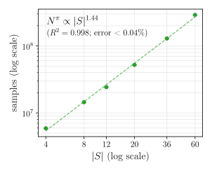
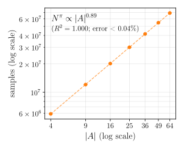
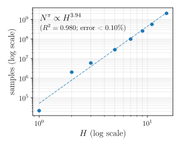
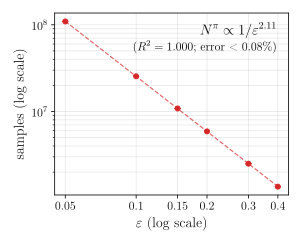
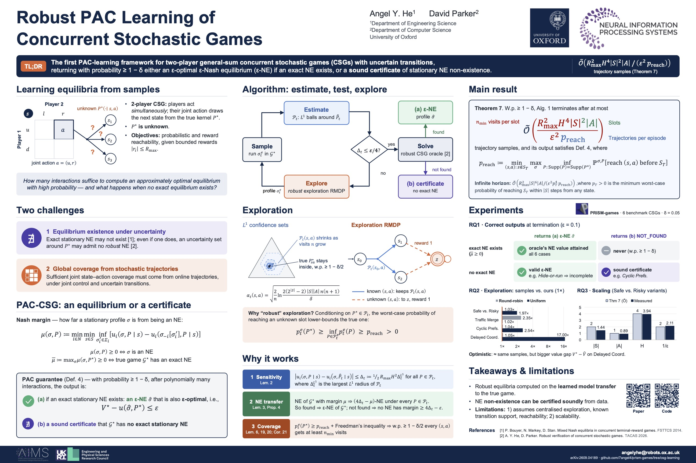

Robust PAC Learning of Concurrent Stochastic Games
1Department of Engineering Science 2Department of Computer Science University of Oxford
NeurIPS 2026, Sydney
TL;DR The first PAC-learning framework for two-player general-sum concurrent stochastic games (CSGs) with uncertain transitions. With probability at least \(1-\delta\), it returns an \(\varepsilon\)-Nash equilibrium (\(\varepsilon\)-NE), \(\varepsilon\)-optimal if an exact stationary NE exists, or a sound certificate that none exists.
Abstract
We introduce the first Probably Approximately Correct (PAC) learning framework for general-sum concurrent stochastic games (CSGs) with transition uncertainty, while addressing the challenge of Nash equilibrium (NE) existence. Our algorithm maintains data-driven \(L^1\) confidence sets over transition kernels and solves a robust CSG to compute a social-welfare optimal \(\varepsilon\)-NE, using a robust MDP-based exploration mechanism to drive joint state–action coverage. Crucially, we introduce a Nash margin characterisation that enables principled reasoning about equilibrium existence: the framework either returns an \(\varepsilon\)-approximate NE whose social-welfare value is \(\varepsilon\)-close to optimal, or provides a sound certificate that no exact NE exists. Under a minimum reachability condition \(p_{\mathrm{reach}}>0\) over relevant state–action pairs, the algorithm terminates after a polynomial number of trajectory samples, with sample complexity \(\widetilde{\mathcal{O}}\big(R_{\max}^2H^4|S|^2|A|/(p_{\mathrm{reach}}\varepsilon^2)\big)\). Empirical results on benchmark CSGs demonstrate near-optimal performance, correct handling of equilibrium (non-)existence, and sample complexity consistent with theory.
Two challenges
Equilibrium existence under uncertainty
Exact stationary NE may not exist in CSGs (Bouyer et al., 2014). Even when one exists in the true game, an uncertainty set around the true transition kernel may admit no robust NE (He and Parker, 2026). A PAC framework must therefore handle non-existence, not only compute equilibria.
Global coverage from stochastic trajectories
Every relevant joint state–action pair must be visited often enough, from online trajectories, although no single player controls the joint action and the transitions are uncertain. We address this with centralised exploration, which coordinates the joint actions.
How it works
Setting. The true game \(\mathcal{G}^\star\) is a finite two-player general-sum CSG. The learner knows its \(|S|\) states, \(|A|\) joint actions, rewards (bounded by \(R_{\max}\)) and transition support, but not its transition probabilities \(P^\star\). It chooses both players’ actions (centralised exploration) and learns from sampled trajectories. Objectives are reaching target states \(S_T\) or accumulating reward, within a horizon \(H\) or unbounded.
\(L^1\) confidence sets
Exploration RMDP
Confidence sets. For each non-target pair \((s,a)\) (with \(s\notin S_T\)), the learner keeps an \(L^1\) ball \(\mathcal{P}_t(s,a)\) of distributions with the known support, centred at the empirical distribution \(\widehat{P}_{sa,t}\). Its radius shrinks as \((s,a)\) is visited more often, and with probability at least \(1-\delta/2\) every ball contains the true distribution \(P^\star_{sa}\), at every episode. The learner stops exploring once \(\Delta_t\le\varepsilon/4\), where \(\Delta_t:=\tfrac12R_{\max}H^2\max_{(s,a)}\sup_{p\in\mathcal{P}_t(s,a)}\|p-\widehat{P}_{sa,t}\|_1\) bounds how far any player’s value under a kernel in the confidence sets can be from its value under the empirical model (Lemma 2).
Robust exploration. To decide where to explore, the learner solves an auxiliary exploration RMDP (robust Markov decision process). Known pairs keep their confidence sets; unknown (under-visited) pairs move to an absorbing state \(z\) and collect reward 1 on that move, so a profile’s expected reward is its probability of reaching an unknown pair. Write \(p^e_t(P)\) for this probability under the exploration profile \(\sigma^e_t\) and kernel \(P\), and \(\mathcal{P}^e_t\) for the RMDP’s uncertainty set. Because \(\sigma^e_t\) maximises the worst case over \(\mathcal{P}^e_t\), as long as unknown pairs remain and the confidence sets contain \(P^\star\) (Lemma 6; \(p_{\mathrm{reach}}\) is defined under Main result):
\[ p^e_t(P^\star)\;\ge\;\inf_{P\in\mathcal{P}^e_t}p^e_t(P)\;\ge\;p_{\mathrm{reach}}\;>\;0. \]With an optimistic (best-case) objective this bound need not hold: a best-case probability over the confidence sets need not lower-bound the probability under \(P^\star\). Sampling \(\widetilde{\mathcal{O}}(1/p_{\mathrm{reach}})\) trajectories per episode makes each episode reach an unknown pair with high probability. Freedman’s inequality then shows that, with probability at least \(1-\delta/2\), every non-target pair is visited \(n_{\min}\) times within \(\widetilde{\mathcal{O}}(n_{\min}|S||A|)\) episodes, which is enough for \(\Delta_t\le\varepsilon/4\).
An equilibrium, or a certificate. The Nash margin measures how far a stationary profile \(\sigma\) is from being an NE:
So \(\mu(\sigma,P)\ge 0\) if and only if \(\sigma\) is an NE, and \(\bar\mu:=\max_\sigma\mu(\sigma,P^\star)\ge 0\) if and only if the true game has an exact stationary NE. Once \(\Delta_t\le\varepsilon/4\), a robust CSG solver is run on the learned model. If it finds a robust \(\varepsilon\)-NE, it returns one with the highest worst-case social welfare. Whenever the confidence sets contain \(P^\star\), that profile is an \(\varepsilon\)-NE of the true game, and \(\varepsilon\)-optimal if an exact stationary NE exists; and if the solver finds none, no exact stationary NE exists.
Main result
Theorem 7 (finite horizon). Assume \(p_{\mathrm{reach}}>0\) (Assumption 1) and a correct robust CSG oracle (Assumption 2). With probability at least \(1-\delta\), Alg. 1 terminates after at most
- \(n_{\min}=\widetilde{\mathcal{O}}(R_{\max}^2H^4|S|/\varepsilon^2)\) visits per slot
- at most \(|S||A|\) slots (state–action pairs)
- \(\widetilde{\mathcal{O}}(1/p_{\mathrm{reach}})\) trajectories per episode
trajectory samples, and its output satisfies the PAC-CSG guarantee (Def. 4). The output is either (a) an \(\varepsilon\)-NE \(\hat\sigma\) of the true game, or (b) a sound certificate that no exact stationary NE exists. If an exact stationary NE exists, the output is always (a), and \(\hat\sigma\) is also \(\varepsilon\)-optimal: \(V^\star-u(\hat\sigma,P^\star)\le\varepsilon\), where \(V^\star\) is the highest social welfare (the players’ total expected utility) of an exact stationary NE. If none exists, either output can occur. Here
is the minimum, over non-target pairs, of the best worst-case probability of reaching that pair from the initial state before the targets \(S_T\).
Infinite horizon (Theorem 27, assuming that some profile reaches \(S_T\) almost surely from every state under every kernel with the true support, and that \(p_T>0\)): \(\widetilde{\mathcal{O}}\big(R_{\max}^2|S|^6|A|/(\varepsilon^2p_T^4\,p_{\mathrm{reach}})\big)\), where \(p_T\) is the minimum worst-case probability of reaching \(S_T\) within \(|S|\) steps from any state.
Experiments
Implemented in PRISM-games and evaluated on six benchmark CSGs, with \(\delta=0.05\), \(\varepsilon=0.2\) (\(\varepsilon=0.1\) for RQ1) and 10 random seeds.
RQ1: correct outputs at termination
all 6 cases in Table 1 never
guaranteed w.p. \(\ge 1-\delta\); not observed
Hide-or-Run, unbounded reachability: all runs sound certificate (NOT_FOUND)
Cyclic Prefs., reachability reward: 10/10 runs
When an exact stationary NE exists, the returned profile attains the NE value that the exact PRISM-games solver computes on the true game. Without one, the algorithm certifies non-existence (Cyclic Preferences, reachability reward) or returns a valid \(\varepsilon\)-NE (Hide-or-Run, unbounded reachability): the certificate is sound, but not complete.
RQ2: exploration strategy
Show the data (Table 2)
| Explorer | Safe vs. Risky | Traffic Merge | Cyclic Prefs. | Delayed Coord. |
|---|---|---|---|---|
| Robust (ours) | 5.90 ± 0.00 gap 0.005 ± 0.000 | 6.90 ± 0.00 gap 0.000 ± 0.000 | 18.41 ± 0.01 gap – | 42.95 ± 0.00 gap 0.000 ± 0.000 |
| Optimistic | 5.90 ± 0.00 gap 0.005 ± 0.000 | 6.90 ± 0.00 gap 0.000 ± 0.000 | 18.41 ± 0.01 gap – | 43.15 ± 0.87 gap 0.060 ± 0.097 |
| Round-robin | 6.09 ± 0.09 gap 0.005 ± 0.000 | 16.22 ± 0.00 gap 0.000 ± 0.000 | 19.07 ± 0.01 gap – | 44.92 ± 0.83 gap 0.060 ± 0.097 |
| Uniform | 11.61 ± 0.01 gap 0.005 ± 0.000 | 7.02 ± 0.00 gap 0.000 ± 0.000 | 46.84 ± 0.02 gap – | 730.09 ± 0.28 gap 0.180 ± 0.063 |
RQ3: sample-complexity scaling




Poster

Citation
@inproceedings{he2026robust,
title = {Robust {PAC} Learning of Concurrent Stochastic Games},
author = {He, Angel Y. and Parker, David},
booktitle = {Advances in Neural Information Processing Systems (NeurIPS)},
year = {2026}
}Acknowledgements
This work is supported by the EPSRC Centre for Doctoral Training no. EP/Y035070/1 and the UKRI AI Hub on Mathematical Foundations of AI.